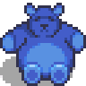
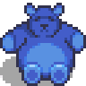
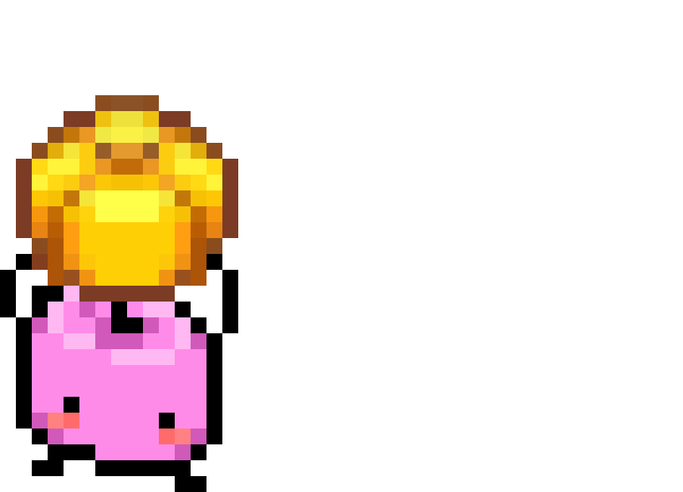
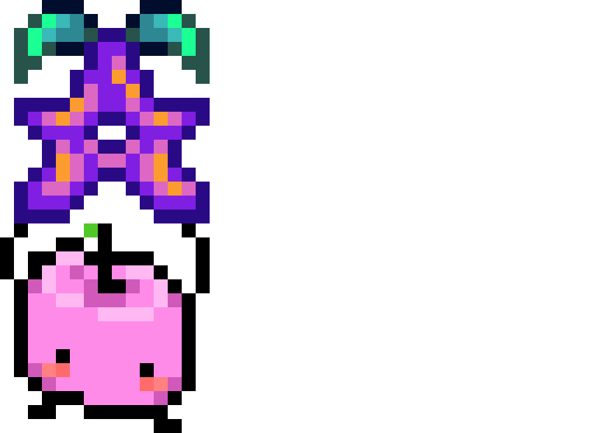
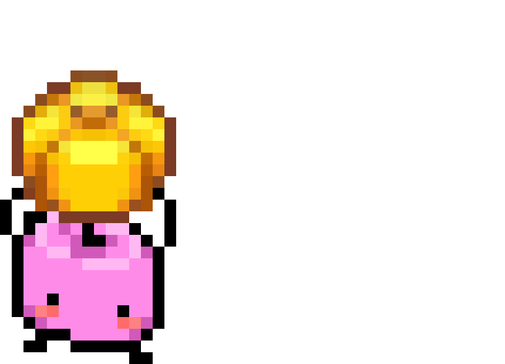
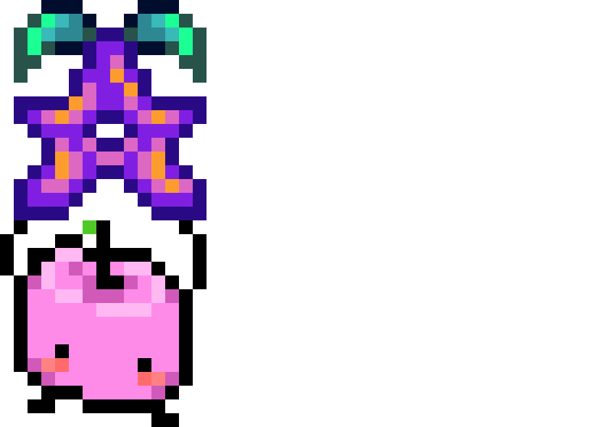
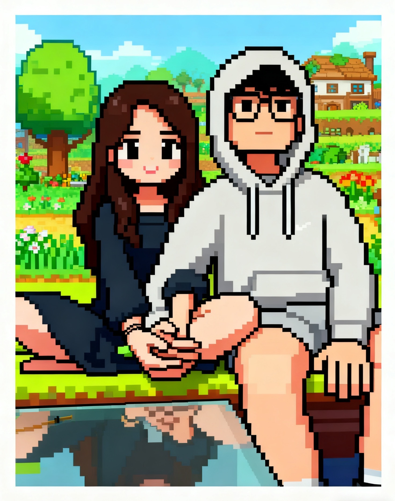
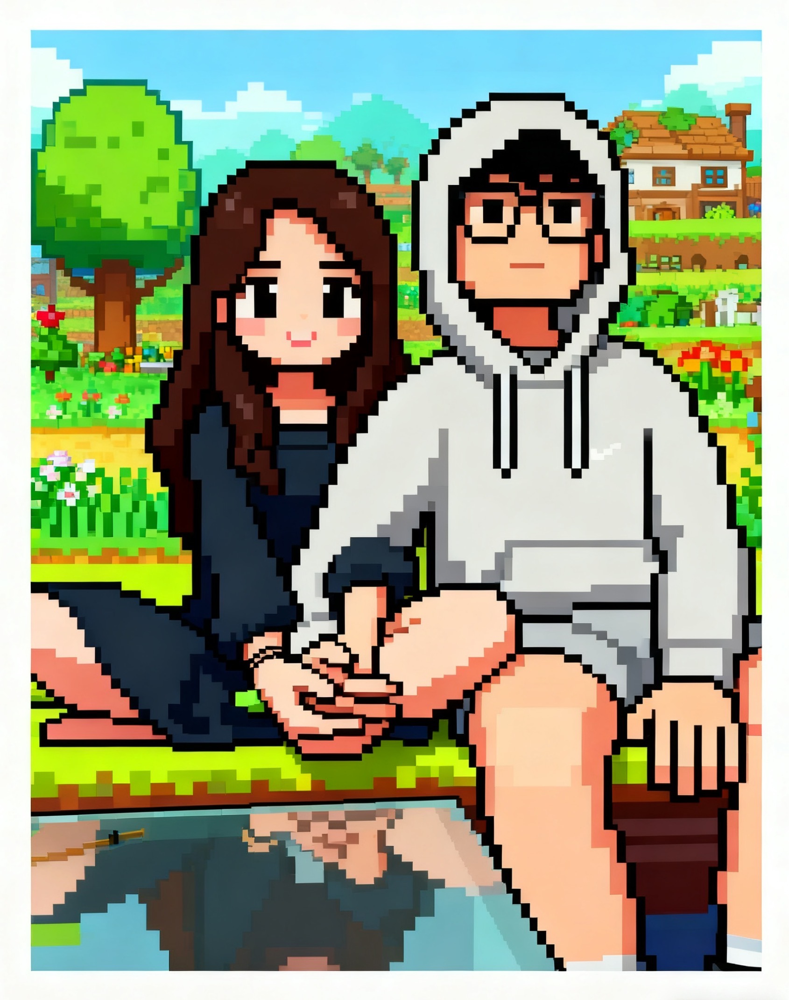

🌾
生日快乐，小镇为你守候
今天，山谷里的天气：阳光明媚，带着一点点心动的风。 风从山顶吹过树林，又路过你熟悉的镇广场、酒吧和海滩木屋。 每个角落都藏好了一个想对你说「生日快乐」的人—— 他们不太会排队，所以就都挤在了这张地图里。
想先听谁说，就去点亮他所在的地方吧 💌
（就当是一个只在你生日这一天开放的隐藏任务。）


 

 





 查看早安频道
查看早安频道

今天，山谷里的天气：阳光明媚，带着一点点心动的风。 风从山顶吹过树林，又路过你熟悉的镇广场、酒吧和海滩木屋。 每个角落都藏好了一个想对你说「生日快乐」的人—— 他们不太会排队，所以就都挤在了这张地图里。
想先听谁说，就去点亮他所在的地方吧 💌
（就当是一个只在你生日这一天开放的隐藏任务。）
生日快乐！今天的星露谷有一点不一样，因为多了一个正在被认真爱着的人。
 
